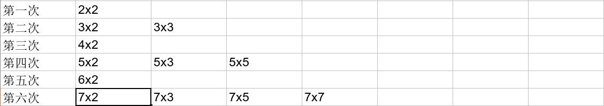

因數
質數測試¶
問題
檢查一個數 \(n\) 是否為質數
我們只需要去枚舉在 \([2, \sqrt{n}]\)1 內的數是否能整除 \(n\) 即可，複雜度 \(O(\sqrt{n})\)
code
因數分解¶
質因數分解
將 \(n\) 做質因數分解
枚舉 \(i = 2 \ldots \sqrt{n}\)，若 \(n/i\) 可以整除，則持續 \(n\) /= \(i\) 將 \(n\) 中的質因數 \(i\) 都消掉，最後只有 1 個質因數會大於等於 \(\sqrt{n}\)，在特判就好。複雜度 \(O(\sqrt{n})\)
code
篩法¶
問題
給 \(n\)，問 \(\le n\) 的數字內有那些數是質數呢 ?
埃式篩法¶
從小到大考慮每個數，若他還沒被篩掉，代表他是質數，則我們將他的倍數都篩掉。 如果用粗估，根據調和級數，內迴圈次數顯然不會多過 \(O(n \log n)\)。實上，因為質數很稀疏，有人算出來它是 \(O(n \log \log n)\)。
code
線性篩法¶
可以發現有些數字會被重複篩掉很多次。我們讓每個數字都只會被最小的質數篩掉，複雜度 \(O(n)\)。例如說一個數字 n 可以表示成 n = p * k，其中 p 是 n 的最小質因數，k 為剩下來的數字，n 就只會被 p * k 這個組合給篩掉。假設目前跑到 i，那麼我們就枚舉 j，讓 i * prime[j] 都標記為合數（這邊 prime[j] 就是 i * prime[j] 的最小質數，i 的意義只是上面的 k 而已），當跑到 i % prime[j] == 0 的時候，代表 i * prime[j + 1], i * prime[j + 2], ... 的最小質數就不會是 prime[j + 1], prime[j + 2], ... 而是 prime[j]，也就代表我們繼續篩的話就不能保證每個數字都只被篩掉一次。而且這些數字可以表示成 (比 i 大的數字) * prime[j]，所以一定會在後面跑到。
我們將線性篩法每一輪會篩掉的數字列出來看看:

從圖上我們看到，第一列篩掉的是最小質因數是 2 的數，第二列篩掉的是最小質因數為 3 的數，依次類推，可以把所有的合數都篩掉。
code
應用¶
埃式篩法雖然複雜度較差，但能用來計數，實用性較高，很多問題能搭配篩法加上其他資料結構來處理，而線性篩就只能用來找質數
CSES - Counting Coprime Pairs
給一個長度為 \(n\) 的陣列，問互質的 pair\((a_i, a_j)\) 有幾對
\(n\le 10^5, 1\le a_i \le 10^6\)
思路
cnt[x] 表示 x 的倍數有幾個，d(x) 表示 gcd 是 x 的 pair 有幾個，\(d(x) = C^{cnt[x]}_2 - d(2\times x) - d(3\times x)-d(4\times x)-\ldots\)，從大到小跑過來就不會有重複算的問題
code
類題
給 \(n\) 個介於 \([1,M]\) 的整數，計算有幾對數字的 \(\gcd\) 是二的冪次方。請設計一個時間複雜度至多 \(O(M\log M)\) 的演算法解決上述問題
思路
直接計算每個數字分別為多少個 pair 的 gcd。
使用 DP
-
DP 狀態
dp(i) = gcd 為 i 的 pair 數量
-
DP 轉移
x 為 i 的倍數數量
dp(i) = C(x,2) - dp(i∗2) - dp(i∗3) - ....
-
DP 答案
所有 2 的冪次 DP 值加總
-
時間複雜度
使用篩法實作 O(nlogn)
code
CSES - Prime Multiples
給 \(k\) 個兩兩相異的質數 \(a_1,\ldots, a_k\)，問 \(1\ldots n\) 有多少個數字可被至少一個給定的質數整除
\(n\le 10^{18},k\le 20,2\le a_i\le n\)
思路
因為 k = 20，我們可以枚舉用到的質數，看在 [1, n] 內，同時擁有這些質數的數字有幾個
可是這樣會算到重複的，我們利用排容原理，將看集合大小的奇偶性來判斷是加是減
code
因數¶
n 的因數數量平均有 O(log n) 個
根據篩法，1~n 的因數個數總和為 O(n log n)，也就是平均有 O(log n) 個因數
\(n\) 的因數數量上限可以用 \(O(n^{1/3})\) 來估計
見 CF Blog
因數個數,和,乘積¶
CSES - Divisor Analysis
給 \(p_1, \ldots ,p_n\)，與 \(k_1, \ldots ,k_n\)，代表 \(x=p_1^{k_1}\times p_n^{k_n}\)，求 \(x\) 的:
-
因數個數
-
因數和
-
因數乘積
\(n\le 10^5, 2\le p_i\le 10^6, 1\le k_i\le 10^9\)
思路
因數個數
根據公式，因數個數 \((k_1 +1)\times (k_2 + 1) \times (k_3 + 1)\times ..\)
因數和
對於每個質因數我們都可以用等比級數和公式將他加起來，例如 \(12=2^2\times 3^1\)，\(\texttt{sum}=(2^0+2^1+2^2)\times (3^0+3^1)\)，\((2^0+2^1+2^2)\) 就可以用 \(\displaystyle \frac{a\times (r^n - 1)}{r - 1}\) 將他加起來
因數乘積
也就是要計算 \(x^{d \div 2}\)，其中 \(d=(k_1 +1)\times \ldots \times (k_n + 1)\)，因為可以觀察到就是因數乘積好幾個乘起來是 \(x\) 的 pair。我們以下分 case 討論:
-
當 \(d\) 是奇數
- 代表 \(k_1, \ldots ,k_n\) 都是偶數
- 可以把 \(x^{d \div 2}\) 拆成 \(\sqrt{x}^{d}\)
-
\(d\) 是偶數
- 直接把某個為偶數的 \(k_i+1\) 除 \(2\) 就好
bug
\(d\) 在計算的時候(因數乘積)，因為 \(d\) 是次方，為 \(M-1\) 一循環，所以必須 \(\pmod{M-1}\)
\(\texttt{Fermat's little theorem}\)
\(a\times a^{p-2}\equiv 1 \pmod{p}\) \(a^{p-1}\equiv 1 \pmod{p}\)
code
紀錄出現的質因數¶
fact[i] 紀錄 i 最小的質因數，在做質因數分解的時候就可以做 \(O(\log n)\) 次 \(O(1)\) 查表的質因數分解
紀錄出現的質因數 code
n 的質因數分解
給 \(q\) 個範圍在 \([1, M]\) 正整數，需輸出這 \(q\) 個數字質因數分解的結果，例：\(720\) 要輸出 \(720=2^4 \times 3^2 \times 5\)。請設計一個演算法解決上述問題，需要滿足 :
-
時間複雜度至多 \(O(M \log M + q \log M)\)
-
空間複雜度至多 \(O(M)\)
code
多次詢問 n 的因數
給 \(q\) 筆查詢，每筆詢問需要列出 \(n\) 的所有因數
思路
使用上面的技巧在 \(O(n)\) 預處理，\(O(\log n)\) 得到 \(n={p_1}^{a_1}{p_2}^{a_2}{p_3}^{a_3}\ldots\)，我們就可以枚舉 \(0 \leq b_i \leq a_i\) 來得到因數 \({p_1}^{b_1}{p_2}^{b_2}{p_3}^{b_3}\ldots\)，根據因數數量的估計，這個會花 \(O(n^{1/3})\)，所以整體的複雜度是 \(O(n^{1/3})\)
歐拉函數性質¶
性質一¶
歐拉函數（Euler's totient function），即 \(\varphi(n)\)，表示的是小於等於 \(n\) 和 \(n\) 互質的數的個數，\(\varphi(1)=1\)。
其中
證明
令 \(n=6\)
其中第二到第三部是因式分解。可以看得出來我們是先將 n 裡面 2 的倍數先刪掉，3 的倍數刪掉，再將 6 的倍數加回來。
問題
給定正整數 \(n\)，輸出 \(\varphi (n)\)
\(n\le 10^{12}\)
思路
\(O(\sqrt{n})\) 找出所有質因數
問題
給定正整數 \(n\)，輸出 \(\varphi(1), \varphi(2), \ldots ,\varphi(n)\)
\(n\le 2\times 10^5\)
思路
在篩法過程順便計算
性質二¶
\(n=\sum \varphi(d)\)，其中 \(d\) 是 \(n\) 的因數
例如 \(12\) 的因數有 \(\{1,2,3,4,6,12\}\) ，我們可以把 \(1..12\) 的數分成幾類
-
\(x\) 跟 \(12\) 的 \(\gcd\) 是 \(12\)，\(x\) 可能是 \(\{12\}\)
-
\(x\) 跟 \(12\) 的 \(\gcd\) 是 \(6\)，\(x\) 可能是 \(\{6\}\)
-
\(x\) 跟 \(12\) 的 \(\gcd\) 是 \(4\)，\(x\) 可能是 \(\{4,8\}\)
-
\(x\) 跟 \(12\) 的 \(\gcd\) 是 \(3\)，\(x\) 可能是 \(\{3,9\}\)
-
\(x\) 跟 \(12\) 的 \(\gcd\) 是 \(2\)，\(x\) 可能是 \(\{2,10\}\)
-
\(x\) 跟 \(12\) 的 \(\gcd\) 是 \(1\)，\(x\) 可能是 \(\{1,5,7,11\}\)
那麼要使 \(x\) 跟 \(n\) 的 gcd 是 \(d\)，只能是 \(x=d\times\)(跟 \(\frac{n}{d}\) 互質的數字)，其實就是 \(\varphi(d)\) 裡面所包含的數
- \(x\) 跟 \(12\) 的 \(\gcd\) 是 \(12\)，\(\varphi(1)=1\)，\(x\) 可能是 \(\{1\times 12\}\)
-
\(x\) 跟 \(12\) 的 \(\gcd\) 是 \(6\)，\(\varphi(2)=1\)，\(x\) 可能是 \(\{1\times 6\}\)
-
\(x\) 跟 \(12\) 的 \(\gcd\) 是 \(4\)，\(\varphi(3)=2\)，\(x\) 可能是 \(\{1\times 4, 2\times 4\}\)
-
\(x\) 跟 \(12\) 的 \(\gcd\) 是 \(3\)，\(\varphi(4)=2\)，\(x\) 可能是 \(\{1\times 3,3\times 3\}\)
-
\(x\) 跟 \(12\) 的 \(\gcd\) 是 \(2\)，\(\varphi(6)=2\)，\(x\) 可能是 \(\{1\times 2, 5\times 2\}\)
-
\(x\) 跟 \(12\) 的 \(\gcd\) 是 \(1\)，\(\varphi(12)=4\)，\(x\) 可能是 \(\{1\times 1,1\times 5,1\times 7,1\times 11\}\)
求 phi(因數總和)
求 phi(因數總和)，不能利用上面的公式
思路
先花費 O(sqrt(n)) 幫 n 做質因數分解，還有找到所有的因數。而 n 的因數個數最多 O(n^{1/3})。
在來我們會遇到的問題就是: 對於每個因數 x，計算 phi(x) 要花多少時間 ?
因為 x 的質因數，一定也都是 n 的質因數，所以只需要 O(log n) 即可計算，總複雜度是 O(n^{½} + n^{⅓} * log n) = O(n^0.5)
類題
求 \(\gcd(1,n) + \gcd(2,n) + \ldots + \gcd(n,n)\)
思路
\(\gcd=\frac{n}{d}\) 的有 \(\phi(d)\) 個，答案就是 \(\sum \phi(d) \times \frac{n}{d}\) 其中 \(d\) 是 \(n\) 的因數
題目¶
2020 TOI pC. 銀河捷運
給數對 \((x_1,y_1),(x_2,y_2)\)，與模數 \(M\)，問 \((x_3, y_3)\)。\((x_1,y_1),(x_2,y_2),(x_3,y_3)\) 都符合:
已知:
-
\(m=(y_2-y_1)\cdot (x_2-x_1)^{M-2}\)
-
\(x_1+x_2+x_3=m^2\pmod{m}\)
有 \(t\) 筆輸入，\(t\le 10^5,2\le M<2^{31}\)
思路
- \(m=(y_2-y_1)\cdot (x_2-x_1)^{M-2}\)
- \(k=(y_1-mx_1)\) % \(M\)
- \(x_3=(m^2-x_1-x_2)\) % \(M\)
- \(y_3=(mx_3+k)\) % \(M\)
CF 1445 C. Division
t 筆查詢，每筆給定 p, q，求滿足以下條件的最大 x
-
p % x == 0
-
x % q != 0
\(t\le 50, 1\le p\le 10^{18}, 1\le q\le 10^9\)
思路
可以觀察到若 p % q != 0 則 x = p。若 p % q == 0 的時候，考慮標準因式，我們只要將 p 與 q 共同的某一項降到 q 的次方底下即可
例如:
-
p = 21 * 33 * 52
-
q = 32 * 51
x 只能是 p 削掉與 q 共同的項才合法，所以我們只考慮 3, 5。
-
削掉 3: x = 21 * 31 * 52
-
削掉 5: x = 21 * 33 * 50
顯然削掉 3 可以讓 x 更大
code
-
若 \(n=p\times q\)，則 \(\min(p,q)\le \sqrt{n}\) ↩